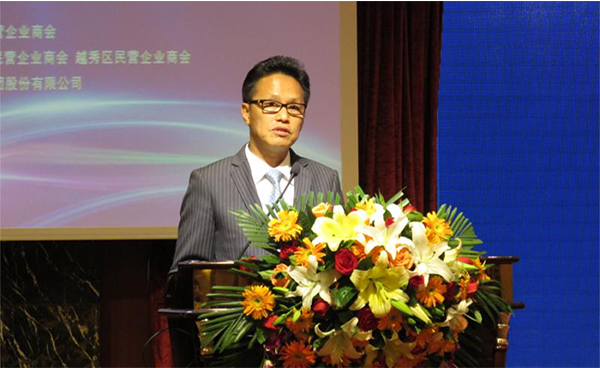

<!DOCTYPE HTML>
<html xmlns="http://www.w3.org/1999/xhtml">
<head>
<meta http-equiv="Content-Type" content="text/html; charset=utf-8" />
<meta name="viewport" content="width=device-width, initial-scale=1" />
<link href="css/css.css" rel="stylesheet" />
<title>海印移动门户</title>
</head>

<body>
<div style=" width:100%; height:50px; color:#fff; background:#C35586">
  <div class="back"><a href="new.html">返回</a></div>
  <div style="font-size:18px; line-height:50px;" align="center">最新动态</div>
</div>

<div class="wrap">
<div style="padding:10px">
  <div align="center" style=" font-size:18px; color:#c51c63; padding-bottom:10px;">
   "2015年经济形势与企业应对策略"论坛隆重举行
  </div>
  <div class="new_nr"> <p>2015年4月14日下午，由广东民营企业商会主办的"2015年经济形势与企业应对策略"论坛在总统大酒店五楼国际会议厅隆重举行。出席领导包括：广州市委统战部副部长、市工商联党组书记张镜初，广州市工商联党组成员、市非公经济组织党工委书记黄健敏，越秀区委统战部副部长、区工商联党组书记祝时舜等领导，及省、市、区300多家企业负责人，会场座无虚席。</p>
  
  <p>由于当前我国经济进入新常态、传统企业面临转型升级的机遇和挑战，广东企业应该如何把握历史机会，挑战企业经营和投融资策略？故本次论坛广东民营企业商会邀请和君集团董事长、和君商学院院长王明夫博士为广大民营企业家作"2015年经济形势与企业应对策略"演讲。</p>
  <p>海印集团董事长、广东民营企业商会会长邵建明表示：举办广东民营企业发展论坛，目的在于为今后一段时期的企业经营理清思路，寻找企业新的发展空间。王明夫博士在对经济发展有着自身独到见解，并且是职业化证券分析师的带头人，相信通过明夫先生的演讲可以给企业家们带来启发。</p>
  <p>论坛中，王明夫博士提到2014年经济形势的回顾；2015年经济形势分析与建议；广东企业未来2-3年的经营、投融资对策，观点清晰、真言直语，得到了现场领导们及企业家的一致好评。</p>
  </div>
  </div>
</div>
</body>
</html>
